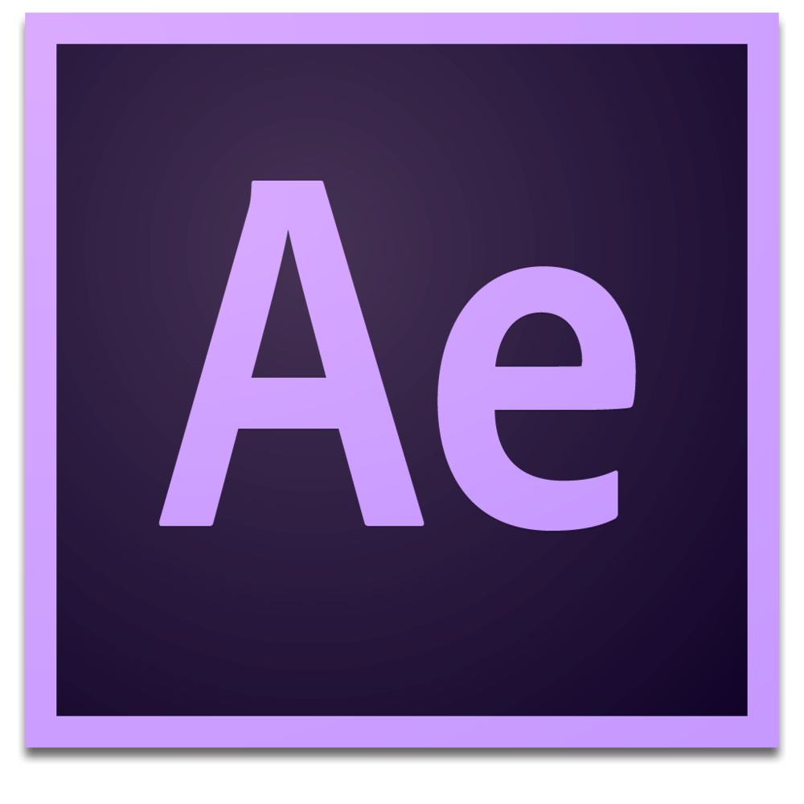

The focus of the course is on graphic composition + time.
No Green Screen!
As you play with After Effects you will learn how to do this on your own. Just do it!

After Effects
Timeline keyframe based animation.
Complex user interface.
Pre-rendered.
Pre-planned animation.
Non-interactive results.
P5.js
Procedural code based animation.
No user interface.
Live-rendered.
Generative animation.
Interactive results.
Assignments
Checkpoints
Tutorials and small assignments.
Milestones in creative projects.
Projects
Due every two weeks.
Using the full skillset at your disposal.
Posted online and critiques in class.
Project #1: Looping Animation
Create an animated composition following the rules presented. The rules must be followed explicitely, but any room for interpretation is encouraged to be played with. (DUE: 2/8/21)
Project #2: Kinetic Typography
Use 8, 16, or 20 lyrical measures of a song (ie: a verse) to create a short video using kinetic typography animated in sync with the music. Use After Effects and the various text, shape and effects tools to implement the appropriate styles and animations to match the style of music and content of the lyrics. (DUE: 3/8/21)
Project #3: Generative Composition
Using P5.js create a generative animated composition. Your software should make use of variables, loops, objects, and random/noise functions. (DUE: 4/5/21)
Project #4: Interactive Graphics
Use mouse/keyboard interaction or live audio/camera input to affect on screen graphics through responsive animation. (DUE: 5/10/21)
Origins of Motion Graphics
Checkpoint #1: Top 5 Title Sequences
Due: Thursday, January 27
Visit Art of the Title and spend some time browsing the database of title sequences. Select five of your favorite title sequences and write a short description for each one outlining the characteristics you like about it. Create a document on the class Google Drive shared folder in order to submit your selection for review.
Sol LeWitt
Project #1: Looping Animation
Due: Monday, February 8
Create an animated composition following the rules presented. The rules must be followed explicitely, but any room for interpretation is encouraged to be played with:
The animation must be exactly 6 seconds long at 30fps and must be able to loop seamlessly.
The composition size must be exactly 1080px x 1080px.
You must use only black, white, and one color with full saturation and full brightness.